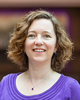

CIDR 2022
January 9-12, 2022 Chaminade, CA
Menu:
Tweets by cidrdbCIDR 2022 Keynote Speakers
Monday Keynote: 8:45 am-10:00 am

Matei Zaharia, Stanford and Databricks
Title:
Lessons from Building Databricks
Abstract:
This is a time of rapid change in both the requirements and technical opportunities for data platforms. In terms of requirements, organizations want to run ever more sophisticated analytics methods (e.g., data science and machine learning) on ever larger volumes of data. On the other hand, cloud storage has created the opportunity to query all of an organization’s data together for the first time, and open source has led to a broad software ecosystem that can exchange data through standard formats. I’ll describe how we leveraged these emerging requirements and opportunities in Databricks, a “lakehouse” platform designed to provide state-of-the-art performance, governance, and scalability for data in open formats that support a wide range of analytics tools. Databricks is used by over 5000 enterprises to process exabytes of data per day on over ten million VMs, with use cases from interactive SQL to real-time machine learning. I’ll describe some of the key things we learned about modern data users when designing the platform, as well as what it takes to operate this scale of cloud platform reliably.
Bio:
Matei Zaharia is a Cofounder and Chief Technologist at Databricks, as well as an Assistant Professor of Computer Science at Stanford. He started the Apache Spark project during his PhD at UC Berkeley, and has worked on other widely used open source data analytics and AI software, including Delta Lake and MLflow. At Stanford, Matei is a co-PI of the DAWN lab, working on infrastructure for machine learning, cloud computing, and privacy. Matei’s research was recognized through the 2014 ACM Doctoral Dissertation Award, an NSF CAREER Award, and the US Presidential Early Career Award for Scientists and Engineers (PECASE), the highest honor bestowed by the US government to early-career scientists and engineers.
Tuesday Keynote: 8:45 am-10:00 am

Magdalena Balazinska, University of Washington
Title: The Diverse Challenges of Video Data Management
Abstract:
The proliferation of inexpensive high-quality cameras coupled with recent advances in computer vision have enabled new applications on video data. The database community is well positioned to deliver the tools needed to support these new types of applications, which has renewed interest in research in video database management systems (VDBMSs). In this talk, we explore the diverse challenges associated with managing video data. We focus, in particular, on the storage manager and present several techniques to store video data in a way that accelerates queries over that data. We then move up the stack and discuss different types of data models that can be exposed to applications. Finally, we discuss the additional challenges of the end-to-end video analytics pipeline and ideas around benchmarking VDBMSs.
Bio:
Magdalena Balazinska is Professor and Director of the Paul G. Allen School of Computer Science & Engineering at the University of Washington. Magdalena's research interests are in the field of database management systems. Her current research focuses on data management for data science, big data systems, cloud computing, and image and video analytics. Prior to her leadership of the Allen School, Magdalena was the Director of the eScience Institute, the Associate Vice Provost for Data Science, and the Director of the Advanced Data Science PhD Option. She also served as Co-Editor-in-Chief for Volume 13 of the Proceedings of the Very Large Data Bases Endowment (PVLDB) journal and as PC co-chair for the corresponding VLDB'20 conference. Magdalena is an ACM Fellow. She holds a Ph.D. from the Massachusetts Institute of Technology (2006). Shortly after her arrival at the University of Washington, she was named a Microsoft Research New Faculty Fellow (2007). Magdalena received the inaugural VLDB Women in Database Research Award (2016) for her work on scalable distributed data systems. She also received an ACM SIGMOD Test-of-Time Award (2017) for her work on fault-tolerant distributed stream processing and a 10-year most influential paper award (2010) from her earlier work on reengineering software clones.